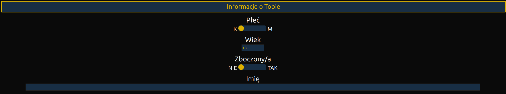

Przed rozpoczciem korzystania, musisz dostarczy botowi informacji o tym jak chcesz 偶eby dziaa. W tym celu kliknij na ikonk rozszerzenia (warto j sobie przypi, dla atwiejeszego dostpu). Nastpnie z menu wybierz ustawienia
Wprowad藕 informacje o sobie. Tylko w ten spos贸b bot bdzie m贸g Ci nale偶ycie reprezentowa i odpowiada na pytania zgodnie z prawd. Kliknij na "Informacje o Tobie" aby rozwin t kategori ustawie i wybierz swoj pe oraz wpisz wiek. W nastpnym polu zatytuowanym "Zboczony/a" mo偶esz okreli, czy u偶ywasz portalu 6obcy w celu interakcji o charakterze seksualnym. W polu imi mo偶esz wpisa swoje imi. Mo偶esz te偶 pozostawi je puste, a wtedy bot zapytany o twoje imi odm贸wi odpowiedzi.
Daj botowi zna z kim chcesz rozmawia. Okrel jaka pe i zakres wiekowy (wcznie) Ci interesuje, oraz czy chcesz aby Tw贸j rozm贸wca by otwarty lub niechtny do interakcji seksualnych. Jeli nie masz mocno okrelonych preferencji, pierwsze i ostatnie pole mo偶esz ustawi w pozycji neutralnej (suwak na rodku). Wtedy bot bdzie ignorowa dane kryterium i nikogo przez nie nie zdyskfalifikuje.
Okrel w jaki spos贸b bot ma rozmawia z innymi u偶ytkownikami. Ta sekcja ustawie posiada najwicej p贸l i jest najbardziej skomplikowana. Przejd藕my wic przez wszystkie po kolei.
Na samej g贸rze zobaczy mo偶esz ikonk "i". Po najechaniu na ni zobaczysz informacje o specjalnych wartociach, kt贸re mo偶esz wstawi do wiadomoci, a bot sam je zinterpretuje.
"Powitanie" to wiadomo wysyana od razu po rozpoczciu rozmowy. Najlepiej skorzysta tutaj z jednego z operator贸w przedstawionych w poprzednim punkcie i zdefiniowa wiele alternatywnych wiadomoci (oddzielonych $|), tak jak w wartoci domylnej.
"Wiadomo po weryfikacji" to wiadomo, kt贸ra zostanie wysana od razu po stwierdzeniu przez bota, 偶e rozm贸wca spenia zdefiniowane przez Ciebie kryteria. Wiadomo ta zostanie wysana zanim bot powiadomi Ci, 偶e znalaz dla Ciebie rozm贸wc, lub zanim zakoczy rozmow (patrz nastpne pole). Jeli to pole pozostawisz puste, bot nie wyle 偶adnej wiadomoci na koniec.
"Zakocz rozmow nawet po udanej weryfikacji" to pole, kt贸re powstao z myl o tych, kt贸rzy wol prowadzi konwersacje na innej platformie. Jeli zostanie ustawione na TAK, po upewnieniu si, 偶e rozm贸wca spenia Twoje oczekiwania, bot wyle mu wiadomo okrelon w poprzednim polu i zakoczy rozmow.
Jeli ustawisz pole "Wysyaj pow贸d odrzucenia rozm贸wcy" na TAK, za ka偶dym razem gdy rozm贸wca nie speni zdefiniowanych oczekiwa, bot w ramach ostatniej wiadomoci wyle mu feedback z przyczyn odrzucenia (np. "nie interesuje mnie ta pe"). Funkcja ta powinna by u偶ywana tylko w przypadku gdyby bot odrzuca kogo nieprawidowo, aby dowiedzie si kt贸re kryterium nie dziaa poprawnie. U偶ywanie tej funkcji mo偶e doprowadzi do shadow-bana, wic lepiej zostawi j wyczon (ustawion na NIE).
Pola "Op贸藕nienie midzy znakami" i "Czas reakcji" okrelaj jak szybko bot ma pisa wiadomoci. "Op贸藕nienie midzy znakami" daje mo偶liwo regulowania samej prdkoci pisania, a "Czas reakcji" to czas, kt贸ry bot odczekuje przed rozpoczciem pisania ka偶dej wiadomoci. Dla pocztkujcych u偶ytkownik贸w polecam pozostawienie wartoci domylnych, ale p贸藕niej warto si tymi ustawieniami pobawi, 偶eby uzyska bardziej naturalne dla siebie tempo pisania.
U偶ywajc portalu 6obcy czasem trafisz na ludzi, kt贸rzy rozpoczynaj rozmow i odchodz od komputera nie koczc jej. Pole "Maksymalny czas weryfikacji" chroni bota przed czekaniem w nieskoczono a偶 wr贸c. Jeli wstpna rozmowa zajmuje du偶ej ni偶 okrelony czas, bot koczy rozmow.
UWAGA: Minimalny dopuszczalny czas trwania rozmowy na 6obcy to 5 sekund. Ustawienie w tym polu wartoci mniejszej ni偶 5 sprawi, 偶e bot bdzie dziaa nieprawidowo.
6bot jest wyposa偶ony w mechanizm automatycznego rozwizywania captchy. Proces ten jest jednak skomplikowany i bot czasem potrzebuje na to kilku, a nawet kilkunastu pr贸b. W polu "Limit pr贸b" w sekcji "Captcha" mo偶esz okreli po ilu pr贸bach bot ma si podda i powiadomi Ci o koniecznoci rozwizania captchy rcznie. Jeli wpiszesz tu 0, bot nigdy si nie podda (co jest zalecane, bo zawsze prdzej czy p贸藕niej mu si udaje).
Bot jest r贸wnie偶 wypposa偶ony w mechanizm zapisywania rozm贸w, aby mo偶na byo p贸藕niej do nich wraca. W sekcji "Historia" mo偶esz dopasoa jak dugie rozmowy bd zapisywane, ile ma ich by maksymalnie w pamici, a tak偶e po jakim czasie maj by automatycznie usuwane. Ostatnie 2 pola dotycz tylko rozm贸w zapisanych automatycznie. Jeli dodasz rozmow do "Zapisanych", bdzie ona w pamici komputera a偶 j usuniesz.
6bot stara si r贸wnie偶 odrzuca rozm贸wc贸w rozsyajcych SPAM. Posiada wbudowan baz wzor贸w i fraz wykorzystywan przez SPAMer贸w, ale wykrywa tak偶e wykorzystanie fraz przypominajcych te z wbudowanej bazy. To jak bardzo podobne sowa ma wykrywa, mo偶esz zdefiniowa za pomoc ustawienia "Pr贸g podobiestwa". Jest to jednak zalecane tylko dla zaawansowanych u偶ytkownik贸w.
Wszystko gotowe! Teraz wystarczy, 偶e wejdziesz na 6obcy i klikniesz na ikonk gowy robota w lewym dolnym rogu, aby uruchomi bota.
Wygld ikonki mo偶e si r贸偶ni w zale偶noci od systemu operacyjnego.
Oto najczstrze przyczyny tego problemu:
Bot nie zosta uruchomiony. Pamitaj, 偶e aby zacz dziaa za ka偶dym razem jak otwierasz okno rozmowy na 6obcy, musisz wczy bota klikajc na ikonk gowy robota w lewym dolnym rogu.
W ustawieniu "Maksymalny czas weryfikacji" zostaa podana warto mniejsza ni偶 5. 5 sekund to minimalny czas rozmowy dopuszczany przez 6obcy, wic warto ta nie mo偶e by mniejsza.
Masz wczonego ad-blocka. Spokojnie, 6bot usunie dla Ciebie banery reklamowe z g贸wnego interfejsu, ale jako darmowe oprogramowanie wrzuci sw贸j may baner na ekran z captch. Jeli ten baner nie bdzie si wywietla, 6bot wywietli poni偶szy komunikat i odm贸wi dziaania.
Wycz adblocka, odwie偶 stron i spr贸buj ponownie.
Shadow-ban to mechanizm bezpieczestwa zastosowany na portalu 6obcy. Zapobiega on wykorzystywaniu portalu do wysyki SPAMu. Dziaa to w ten spos贸b, 偶e u偶ytkownicy zachowujcy si jak boty, s skierowywani do osobnej przestrzeni rozm贸w i przestaj by parowani z innymi u偶ytkownikami. Jedyni rozm贸wcy, z kt贸rymi parowany jest zbanowany u偶ytkownik, to boty udajce u偶ytkownik贸w, ale najczciej niezdolne do prowadzenia rozm贸w.
Aby unikn shadow-bana:
6bot jest oprogramowaniem su偶cym do wyszukiwania pasujcych nam rozm贸wc贸w, a nie do rozsyania SPAMu. W zwizku z tym nie zostaa w nim umieszczona funkcjonalno rozsyania pojedynczych wiadomoci i nie zostanie ona wdro偶ona w przyszoci.
Mo偶liwe, i偶 istniej sposoby skonfigurowania 6bota w taki spos贸b, ale bd one sukcesywnie usuwane, aby zapobiega wysyce SPAMu. Dodatkowo zachowanie takie, jest klasyfikowane jako ze przez mechanizmy samego portalu 6obcy i prawdopodobnie szybko skoczy si shadow-banem.
Tak! Mo偶esz bra czynny udzia w rozwoju modelu do rozwizywania captchy na 2 sposoby:
Wczajc w ustawieniach opcj wysyania napotkanych captchy
Rozwizujc captche, kt贸rych nie udao si rozwiza botowi. Mo偶esz to zrobi wchodzc w zakadk "ML" w menu
Uwaga: aby skorzysta z efekt贸w powy偶szych dziaa, przecz model na "Community"